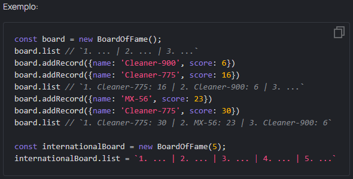
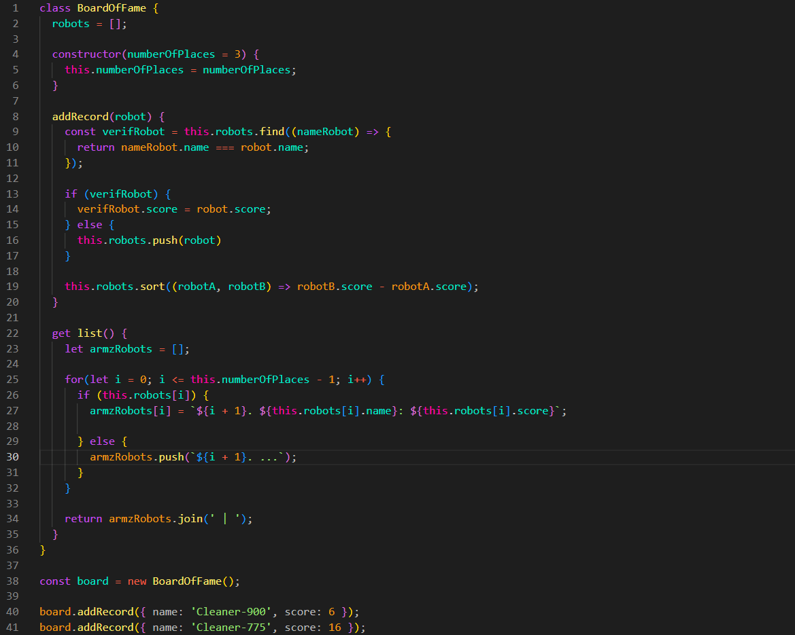

Board of fame
Todos os anos, a Fábrica de Robôs Mate conduz batalhas de robôs na arena. Várias modificações de robôs competem pela superioridade e os campeões entram no quadro da fama. Existem robôs militares, de limpeza e de carregamento - como você pode ver, existem vários modelos de robôs.
Vamos ser justos e criar um quadro de fama para esta competição (classe BoardOfFame).
Por padrão, haverá apenas 3 lugares no quadro da fama. No caso de torneios internacionais, onde poderiam haver mais vagas de campeão, o construtor da classe BoardOfFame poderá aceitar qualquer outro número de vagas.
Crie um método addRecord para todas as instâncias da classe BoardOfFame que receberão o objeto robot e adicione uma nova entrada ao quadro da fama. Se o novo robô tiver mais pontos que os demais, ele ocupará seu lugar no topo, movendo os outros robôs para baixo.
Crie também um getter list para instâncias que listará os campeões no formato do exemplo. A lista deve ser uma string. Getter deve retornar ... para elementos não existentes (se você precisar dos primeiros 5, mas no array apenas 3 robôs).
De acordo com as regras do torneio, todas as inscrições devem ter nomes exclusivos. Se o novo robô tiver o mesmo nome de um dos robôs da lista, basta atualizar o valor de score existente.

Dicas:
- adicione a variável this.numberOfPlaces dentro do construtor e salve a contagem de lugares no quadro da fama
- além disso, crie o array this.robots dentro do construtor e coloque lá todos os objetos robot no método addRecord
- classifique this.robots dentro do método addRecord
- use o getter list para transformar um array de objetos this.robots em string formatada
Resultado:
